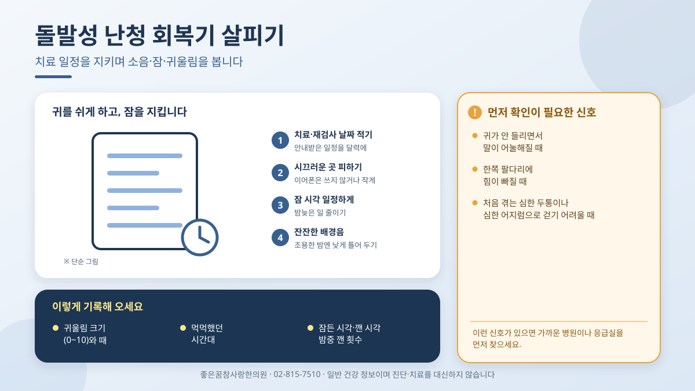

이종호 한의사 감수좋은꿈참사랑한의원 대표원장 (한의사 면허번호 19769)발행 2026-11-26 · 수정 2026-11-26
이 글의 차례
아침에 눈을 떴는데 한쪽 귀가 물이 들어간 것처럼 먹먹합니다. 베개에 눌려서 그런가 싶어 귀를 몇 번 털어 보지만 그대로입니다. 휴대폰을 그쪽 귀에 대 보니 상대방 목소리가 멀리서 들리는 듯 작고, 귓속에서는 '삐' 하는 소리가 계속 납니다.
이렇게 뚜렷한 이유 없이 한쪽 귀의 청력이 갑자기 떨어지는 것을 돌발성 난청이라고 부릅니다. 귀울림이나 귀가 꽉 찬 느낌, 때로는 어지럼이 함께 오기도 합니다.
돌발성 난청은 이비인후과에서 청력 검사를 받고 치료를 서둘러 시작하는 것이 무엇보다 먼저입니다. 이상하다고 느낀 날, 늦어도 며칠 안에 이비인후과를 찾으시길 권합니다. 시간이 지날수록 치료의 기회가 줄어들 수 있다고 알려져 있기 때문입니다.
이 글은 그 치료를 받고 있거나 마친 뒤, 회복기를 어떻게 지낼지에 대한 이야기입니다. 한의원에서는 이비인후과 치료를 대신하지 않고, 그 곁에서 잠과 피로, 귀울림으로 지친 마음, 굳은 목과 어깨를 함께 살핍니다.
갑자기 소리를 잃은 경험은 생각보다 큰 충격입니다. 진료실에서 "다시 예전처럼 들릴 수 있을까요?" 하고 조심스럽게 물으시는 분들을 자주 만납니다. 그 막막한 마음을 먼저 헤아리며 이야기를 시작합니다.
왜 갑자기 한쪽 귀가 잘 안 들릴까요
소리는 귓바퀴와 귓구멍을 지나 고막을 울리고, 가운데귀의 작은 뼈들을 거쳐 속귀의 달팽이관으로 전해집니다. 달팽이관 안의 섬세한 털세포가 이 떨림을 신호로 바꾸어 청신경을 통해 뇌로 보냅니다.
돌발성 난청은 대개 이 가운데 속귀나 청신경 쪽에 문제가 생겨 소리를 신호로 바꾸는 과정이 갑자기 흔들린 상태로 설명합니다. 귀지가 막히거나 중이염이 생겨 소리가 잘 전해지지 않는 경우와는 성격이 다릅니다.
원인은 아직 한 가지로 밝혀져 있지 않습니다. 바이러스 감염, 속귀로 가는 혈액 흐름의 변화, 면역 반응 등이 이야기됩니다. 진료실에서는 귀가 안 들리기 전에 감기를 앓았거나, 잠이 크게 모자랐거나, 일이 몰려 무리했다는 말씀을 자주 듣습니다.
한의학에서는 갑자기 귀가 먹먹해지고 잘 안 들리는 것을 폭롱(暴聾)이라 불렀습니다. 몸에 열이 위로 몰렸는지, 기운이 많이 빠졌는지, 긴장으로 몸이 굳었는지를 함께 보며 몸 전체의 흐름을 읽으려 합니다.
귀가 먹먹할 때 구분해 볼 것들
귀가 먹먹하다고 모두 돌발성 난청은 아닙니다. 다만 스스로 구분하기는 어렵기 때문에, 한쪽 귀가 갑자기 안 들린다면 이비인후과에서 확인하는 것이 먼저입니다. 진료 때 도움이 되도록 차이를 정리해 보면 이렇습니다.
귀지나 물이 막힌 경우
샤워나 수영 뒤 물이 들어간 느낌, 귀지가 많이 쌓인 경우에도 먹먹할 수 있습니다. 이비인후과에서 귀 안을 들여다보면 바로 확인할 수 있습니다. 집에서 면봉으로 깊이 파는 것은 피해 주세요.
중이염이나 귀관 기능 문제
감기 뒤 코가 막히면서 귀가 먹먹하고, 침을 삼키면 '뽁' 하고 잠시 뚫리는 느낌이 있다면 가운데귀와 코를 잇는 귀관 쪽 문제를 살피기도 합니다. 귀가 아프거나 열이 나는 경우도 있습니다.
메니에르병
귀의 먹먹함과 울림, 청력 변화가 빙빙 도는 어지럼과 함께 수십 분에서 몇 시간씩 되풀이된다면 메니에르병을 살핍니다. 낮은 소리 쪽 청력이 오르내리는 흐름을 보이기도 합니다.
큰 소리를 들은 뒤
공연장이나 공사장 소음, 이어폰을 크게 들은 뒤 귀가 먹먹하고 울릴 때도 있습니다. 대개 시간이 지나며 가라앉지만, 하루가 지나도 그대로라면 이비인후과 확인을 권합니다. 그 뒤로는 큰 소리가 나는 곳에서 귀마개를 챙기는 습관을 들여 보세요.
회복기에 흔히 겪는 일
치료를 받는 동안과 그 뒤 몇 주는 청력과 귀울림이 함께 오르내리는 시기입니다. 많은 분들이 이 시기를 가장 힘들어하십니다.
귀울림이 신경 쓰입니다
조용한 밤이 되면 귀울림이 더 크게 들려 잠들기 어렵다는 분이 많습니다. 소리가 커졌다 작아졌다 하면서 '혹시 나빠지는 건가' 하는 걱정이 꼬리를 뭅니다.
소리가 울리거나 찢어지게 들립니다
안 들리던 귀로 들리는 소리가 금속성으로 울리거나, 큰 소리가 유독 거슬린다는 분도 있습니다. 식당이나 카페처럼 소리가 겹치는 곳에서는 말소리를 알아듣기가 더 어렵습니다.
한쪽으로 듣는 피로
한쪽 귀로 대화를 따라가느라 하루 종일 신경을 곤두세우다 보면 저녁이면 머리가 멍하고 어깨가 뻐근합니다. 사람 만나는 일을 피하게 되는 분도 계십니다.
청력이 돌아오는 흐름은 어떻게 확인하나요
치료 뒤 청력이 어느 만큼 돌아올지는 처음 청력이 얼마나 떨어졌는지, 치료를 언제 시작했는지, 어지럼이 함께 있었는지, 나이와 평소 건강 상태에 따라 달라진다고 알려져 있습니다. 많이 돌아오는 분도 있고, 일부만 돌아오는 분도 있습니다.
그래서 이비인후과에서 안내한 재검사를 꼭 챙기시길 권합니다. 내 느낌만으로는 '조금 나아진 것 같다', '그대로인 것 같다'를 가늠하기 어렵습니다. 검사 결과지를 모아 두면 흐름이 한눈에 보입니다.
청력이 일부만 돌아온 경우에는 남은 청력을 어떻게 지키고 쓰는지가 중요해집니다. 보청기나 다른 도움 기구가 필요한지도 이비인후과에서 상의할 수 있습니다. 듣는 일이 편해지면 대화의 피로와 마음의 긴장도 함께 줄어드는 경우가 많습니다.
잠이 귀울림과 엮일 때
회복기에 가장 많이 듣는 고민은 잠입니다. 낮에는 주변 소리에 묻혀 있던 귀울림이 불을 끄고 누우면 갑자기 크게 들립니다. 그 소리에 신경을 쓰다 보면 잠이 달아나고, 잠이 모자라면 다음 날 귀울림이 더 거슬리는 고리가 생깁니다.
이 고리를 끊으려면 밤의 방을 너무 조용하게 두지 않는 것이 한 방법입니다. 빗소리나 파도 소리처럼 잔잔한 소리를 아주 낮게 틀어 두면 귀울림이 덜 도드라집니다. 잠자리에 들기 한 시간 전부터는 밝은 화면을 내려놓고 조명을 낮춰 보세요.
누워서 30분이 지나도 잠이 오지 않으면 잠시 일어나 거실의 어두운 조명 아래 앉아 있다가 졸릴 때 다시 누우세요. 잠과 싸우듯 누워 있는 시간이 길어지면 침대가 긴장의 자리가 되기 쉽습니다.
먼저 이렇게 여쭙니다
처음 오시면 저는 대략 이런 순서로 여쭙습니다. 기억나는 것부터 말씀해 주셔도 괜찮습니다.
- 귀가 안 들리기 시작한 날과 그때의 상황(아침에 깼을 때, 갑자기 들리지 않음 등)
- 이비인후과에서 받은 청력 검사 결과와 치료, 지금 드시는 약
- 귀울림이나 귀가 꽉 찬 느낌, 어지럼이 함께 있었는지
- 그 무렵 감기, 과로, 잠 부족, 큰 스트레스가 있었는지
- 지금은 어떤 상황에서 가장 불편하신지(대화, 전화, 잠들 때)
- 혈압, 혈당, 콜레스테롤 등 평소 관리하는 병이 있는지
귀만 여쭙지 않고 그 귀가 생활을 어떻게 바꿔 놓았는지도 함께 여쭙습니다. 일터에서 대화가 힘든지, 잠을 설치는지, 불안이 커졌는지가 다음에 무엇부터 챙길지를 정해 줍니다.
일상에서 먼저 해 볼 수 있는 것
회복기에는 귀를 쉬게 하고 몸 전체의 리듬을 지키는 것이 바탕입니다. 아래에서 지금 할 수 있는 것 하나부터 골라 보세요.
- 이비인후과에서 안내한 치료 일정과 재검사 날짜를 달력에 적어 두기
- 시끄러운 곳은 당분간 피하고, 이어폰은 쓰지 않거나 아주 작게 듣기
- 잠자리에 드는 시각을 일정하게 맞추고 밤늦은 일은 줄이기
- 조용한 밤에는 작은 선풍기 소리나 잔잔한 배경음을 낮게 틀어 두기
- 대화할 때는 잘 들리는 쪽 귀를 상대 쪽으로 두고 자리 잡기
- 귀울림의 크기를 하루 한 번 0부터 10까지 숫자로 적어 두기
귀울림을 없애려고 계속 귀 기울이면 오히려 더 크게 느껴집니다. 귀울림이 들리면 '아, 또 들리네' 하고 알아차린 뒤, 하던 일로 주의를 돌리는 연습을 해 보세요. 처음에는 어렵지만 반복할수록 조금씩 수월해지는 분이 많습니다.
목과 어깨가 굳으면 머리가 무겁고 귀 주변까지 뻐근하다는 분이 많습니다. 한 시간에 한 번은 자리에서 일어나 어깨를 천천히 돌리고, 숨을 길게 내쉬어 보세요.
식사는 거르지 않는 것이 좋습니다. 병원에서 받은 약 때문에 속이 쓰리거나 입맛이 달라졌다면 그 변화도 적어 두었다가 처방한 의사에게 말씀해 주세요.
한의원에서 함께 살필 수 있는 경우
- 이비인후과 치료를 받으면서 잠과 피로, 소화를 함께 살피고 싶은 경우
- 귀울림 때문에 잠들기 어렵고 낮에도 신경이 곤두서 있는 경우
- 한쪽으로 듣느라 목과 어깨, 머리가 늘 무겁고 뻐근한 경우
- 치료 뒤 생활 리듬을 어떻게 지킬지 함께 정리해 보고 싶은 경우
좋은꿈참사랑한의원에 처음 오시면 이비인후과 진료 기록과 청력 검사 결과, 드시는 약을 먼저 확인합니다. 그다음 양손을 올려 달라고 말씀드리고 맥을 짚으며 잠과 소화, 땀, 대소변, 몸의 열감과 냉감을 여쭙습니다.
진찰 뒤에는 상태에 따라 목과 어깨, 귀 주변과 손발의 자리를 살피며 침을 상의할 수 있습니다. 병원 치료 중이라면 그 일정과 겹치지 않도록 진료 날짜를 함께 맞춥니다.
한약은 진찰 뒤 필요하다고 판단될 때 상의합니다. 병원에서 받은 약이 있다면 이름을 모두 알려 주세요. 함께 드셔도 되는지 신중하게 확인하고 정합니다. 처방받은 약은 처방한 의사와 상의 없이 줄이거나 끊지 않습니다.
다시 오시면 지난번 이후 귀울림과 잠이 어땠는지, 재검사 결과는 어땠는지부터 이어서 여쭙습니다. 한 번의 진료보다 그 사이의 기록이 다음 길을 정하는 데 더 많은 것을 알려 줍니다.
회복기는 몸만큼 마음도 지치는 시기입니다. 귀 이야기를 하다가 눈물이 나도 괜찮습니다. 그동안 혼자 얼마나 애쓰셨는지, 그 이야기부터 천천히 들려주셔도 됩니다.
이렇게 기록해 오시면 상담이 쉬워집니다
귀의 변화는 하루하루 오르내려 기억만으로는 흐름을 잡기 어렵습니다. 2주만 적어 보세요.
- 귀울림의 크기(0부터 10까지)와 가장 크게 들린 때
- 귀가 먹먹한 느낌이 있었는지, 어느 시간대였는지
- 잠든 시각과 깬 시각, 밤중에 깬 횟수
- 시끄러운 곳에 다녀왔는지, 피곤했던 일이 있었는지
- 병원 치료 일정과 드신 약
- 청력 재검사 결과(받으셨다면 결과지 사진)
휴대폰 메모에 짧게 적어도 충분합니다. 빠진 날이 있어도 괜찮습니다. 기억나는 줄부터 같이 펼쳐 보겠습니다.
가족과 동료가 함께 알아 두면 좋은 것
한쪽 귀가 잘 안 들리는 분은 소리가 어디서 나는지 가늠하기 어렵고, 시끄러운 곳에서 말을 알아듣기 힘듭니다. 뒤에서 부르면 못 듣고 지나치는 일도 생깁니다.
말을 걸 때는 잘 들리는 쪽에서, 얼굴이 보이게 마주 보고 조금 천천히 말해 주세요. 목소리를 크게 높이기보다 또박또박 말하는 편이 알아듣기 쉽습니다. 텔레비전 소리를 줄이고 대화하는 작은 배려도 도움이 됩니다. 못 알아들었을 때 다시 물어도 편한 분위기를 만들어 주세요.
일터와 모임에서 지낼 때
회의실에서는 잘 들리는 귀가 사람들 쪽을 향하도록 자리를 잡아 보세요. 벽을 등지고 앉으면 뒤에서 울리는 소리가 줄어 말소리가 조금 더 또렷해집니다. 가까운 동료에게는 한쪽 귀가 불편하다고 미리 말해 두면 서로 덜 어색합니다.
식당이나 카페에서는 음악 스피커와 주방에서 먼 구석 자리가 대화하기 편합니다. 시끄러운 모임이 길어지면 귀도 머리도 금방 지치니, 중간에 잠시 조용한 곳에 나와 쉬는 틈을 가져 보세요.
전화는 잘 들리는 쪽 귀로 받고, 중요한 내용은 문자로 한 번 더 확인해 달라고 부탁하는 것도 좋은 방법입니다. 잘못 들을까 봐 긴장하는 마음이 줄어들면 하루의 피로도 함께 줄어듭니다.
이런 증상은 먼저 확인이 필요합니다
- 귀가 안 들리면서 말이 어눌해지거나 한쪽 팔다리에 힘이 빠지는 경우
- 처음 겪는 심한 두통이나 심한 어지럼으로 걷기 어려운 경우
이런 신호가 있으면 한의원보다 가까운 병원이나 응급실을 먼저 찾으세요.
갑자기 소리를 잃은 그날의 놀람은 쉽게 잊히지 않습니다. 병원 치료를 잘 이어 가면서, 그 곁에서 잠과 마음, 몸의 리듬을 함께 살펴보겠습니다. 다음에 오시면 지난 2주 동안 귀울림과 잠이 어땠는지부터 여쭙겠습니다.
함께 읽으면 좋은 글
- 귀에서 소리가 들리는 이명이 있을 때는 어떤 점을 살펴보나요?
- 귀가 꽉 막힌 듯 먹먹하다가 빙빙 도는 어지럼이 몇 시간씩 오는 메니에르병은 어떻게 살피나요?
- 시끄러운 지하철로 출퇴근한 뒤 귀가 먹먹하고 삐 소리가 날 때는 어떻게 살피나요?
- 귀에서 심장 박동처럼 쿵쿵 울리는 소리가 들릴 때는 무엇을 먼저 확인하나요?

여쭙는 것
- 귀가 안 들리기 시작한 날과 그때의 상황(아침에 깼을 때, 갑자기 들리지 않음 등)
- 이비인후과에서 받은 청력 검사 결과와 치료, 지금 드시는 약
- 귀울림이나 귀가 꽉 찬 느낌, 어지럼이 함께 있었는지
생활에서 해 볼 것
- 이비인후과에서 안내한 치료 일정과 재검사 날짜를 달력에 적어 두기
- 시끄러운 곳은 당분간 피하고, 이어폰은 쓰지 않거나 아주 작게 듣기
- 잠자리에 드는 시각을 일정하게 맞추고 밤늦은 일은 줄이기
한의원에서 함께 살필 것
- 이비인후과 치료를 받으면서 잠과 피로, 소화를 함께 살피고 싶은 경우
- 귀울림 때문에 잠들기 어렵고 낮에도 신경이 곤두서 있는 경우
- 한쪽으로 듣느라 목과 어깨, 머리가 늘 무겁고 뻐근한 경우
먼저 확인이 필요한 신호
- 귀가 안 들리면서 말이 어눌해지거나 한쪽 팔다리에 힘이 빠지는 경우
- 처음 겪는 심한 두통이나 심한 어지럼으로 걷기 어려운 경우
한눈에 보는 표
| 구분 | 핵심 |
|---|---|
| 여쭙는 것 | 귀가 안 들리기 시작한 날과 그때의 상황(아침에 깼을 때, 갑자기 들리지 않음 등) 이비인후과에서 받은 청력 검사 결과와 치료, 지금 드시는 약 |
| 생활에서 해 볼 것 | 이비인후과에서 안내한 치료 일정과 재검사 날짜를 달력에 적어 두기 시끄러운 곳은 당분간 피하고, 이어폰은 쓰지 않거나 아주 작게 듣기 |
| 한의원에서 함께 살필 것 | 이비인후과 치료를 받으면서 잠과 피로, 소화를 함께 살피고 싶은 경우 귀울림 때문에 잠들기 어렵고 낮에도 신경이 곤두서 있는 경우 |
| 먼저 확인이 필요한 신호 | 귀가 안 들리면서 말이 어눌해지거나 한쪽 팔다리에 힘이 빠지는 경우 처음 겪는 심한 두통이나 심한 어지럼으로 걷기 어려운 경우 |
자주 묻는 질문
귀가 갑자기 안 들리면 한의원에 먼저 가도 되나요?
한쪽 귀가 갑자기 잘 안 들린다면 이비인후과에서 청력 검사를 받고 치료를 서둘러 시작하는 것이 먼저입니다. 한의원 진료는 그 치료를 이어 가면서 곁에서 함께하는 자리입니다.
병원 치료를 받고 있는데 침을 함께 맞아도 되나요?
받고 계신 치료와 드시는 약을 모두 알려 주시면 확인한 뒤 진찰을 거쳐 정합니다. 병원 치료 일정과 겹치지 않도록 날짜도 함께 맞춥니다.
귀울림은 언제까지 들리나요?
귀울림이 가라앉는 시기는 사람마다 다릅니다. 귀울림에 계속 귀 기울이기보다 잠과 생활 리듬을 지키며 흐름을 기록해 보시길 권합니다. 크기 변화가 크다면 이비인후과에 함께 알려 주세요.
회복기에 이어폰을 써도 되나요?
당분간은 쓰지 않거나 아주 작은 소리로 짧게 쓰시는 편이 귀를 쉬게 하는 데 좋습니다. 다시 써도 되는 시기는 이비인후과 선생님과 상의해 정하세요.
좋은꿈참사랑한의원은 재진 때 지난번 이야기부터 이어서 여쭙니다. 진료시간과 예약은 오시는 길에서 확인하세요.
어디서 상담받을 수 있나요?
좋은꿈참사랑한의원은 서울 동작구 만양로2길 2 신성빌딩 3층·5층(서울 동작구 상도동, 7호선 상도역 3번 출구 근처)에 있습니다. 한의사 3명(이종호 대표원장, 조영기 수석진료원장, 정원영 진료원장)이 진료합니다. 진료시간은 평일 09:30~20:00(점심 13:00~14:00), 토·일·공휴일 09:30~15:00이며, 방문 전 전화로 확인을 권합니다. 예약은 네이버 예약, 카카오톡 상담, 전화 02-815-7510로 받습니다.
이 글은 일반적인 건강 정보이며 개인의 진단이나 치료를 대신하지 않습니다. 증상이 있거나 복용 중인 약이 있다면 진료를 통해 확인하세요. 치료 효과는 개인마다 다를 수 있습니다.
작성 기준: 일반적으로 알려져 있는 건강 정보를 참고해 정리했습니다(대표원장 감수). 증상 기록은 1~2주 동안 하루 1회, 비슷한 시간에 적어 오시면 지난 상태와 비교하기 쉽습니다.